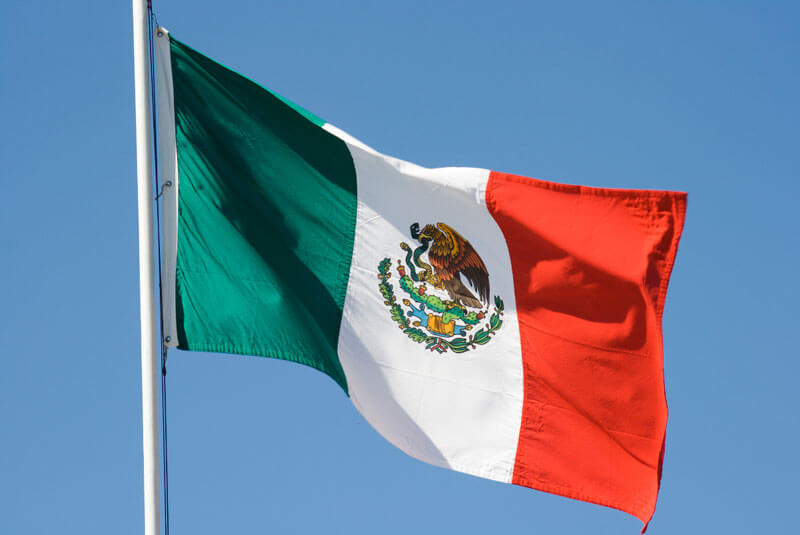

Aztec Origins

Photo credit: The Codex Mendoza (courtesy of Codex Mendoza, c. 1541, Mexico City, folio 2r. Manuscript Selden A.1., Bodleian Library, Oxford. Public Domain.)
The Aztecs were not born near the Texcoco Lake nor were they called Aztecs originally. They were called the Mexicas lived in a place called Aztlan, surrounded by water. Aztlan is translated to be multiple similar meanings, such as ‘“White Land,” “Land of White Herons,” or “Place of Herons”’ (Britannica) . They left their land because their patron deity, Huitzilopochtli, who was a god unique to the Mexica, ordered the Mexicas to search for a new homeland. A sign of a eagle eating a snake on a cactus would signify the Aztecas that they have found their new permanent home. This appearance actually is on the national flag of Mexico.
The Mexica left Aztlan and started on their 200 year search and eventually arrive at Lake Texcoco to see the sign from the gods, an eagle eating a snake. Here, they built the Aztec Empire and the powerful capital city Tenochtitlan.